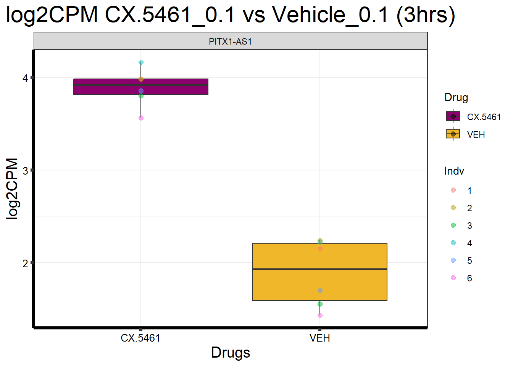
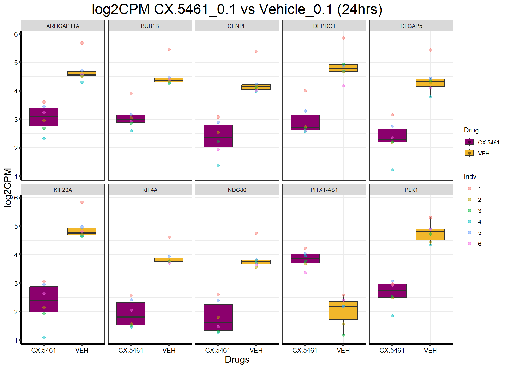
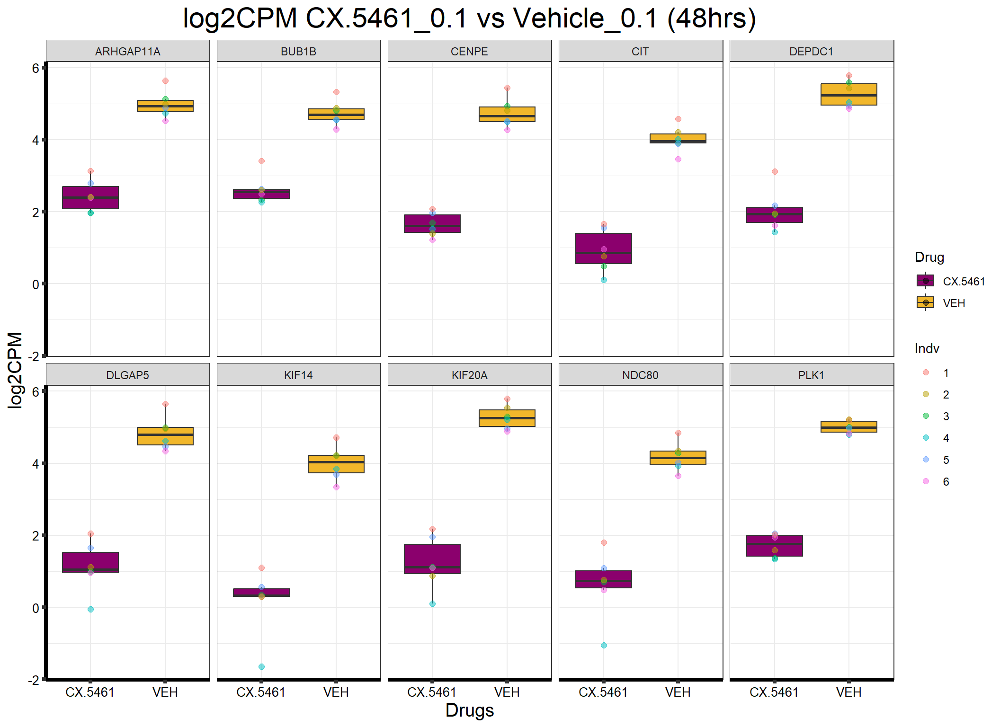

Last updated: 2025-02-07
Checks: 7 0
Knit directory: CX5461_Project/
This reproducible R Markdown analysis was created with workflowr (version 1.7.1). The Checks tab describes the reproducibility checks that were applied when the results were created. The Past versions tab lists the development history.
Great! Since the R Markdown file has been committed to the Git repository, you know the exact version of the code that produced these results.
Great job! The global environment was empty. Objects defined in the global environment can affect the analysis in your R Markdown file in unknown ways. For reproduciblity it’s best to always run the code in an empty environment.
The command set.seed(20250129) was run prior to running
the code in the R Markdown file. Setting a seed ensures that any results
that rely on randomness, e.g. subsampling or permutations, are
reproducible.
Great job! Recording the operating system, R version, and package versions is critical for reproducibility.
Nice! There were no cached chunks for this analysis, so you can be confident that you successfully produced the results during this run.
Great job! Using relative paths to the files within your workflowr project makes it easier to run your code on other machines.
Great! You are using Git for version control. Tracking code development and connecting the code version to the results is critical for reproducibility.
The results in this page were generated with repository version 8230f77. See the Past versions tab to see a history of the changes made to the R Markdown and HTML files.
Note that you need to be careful to ensure that all relevant files for
the analysis have been committed to Git prior to generating the results
(you can use wflow_publish or
wflow_git_commit). workflowr only checks the R Markdown
file, but you know if there are other scripts or data files that it
depends on. Below is the status of the Git repository when the results
were generated:
Ignored files:
Ignored: .RData
Ignored: .Rhistory
Ignored: .Rproj.user/
Untracked files:
Untracked: data/Boxplot_CX_0.1_24.csv
Untracked: data/Boxplot_CX_0.1_3.csv
Untracked: data/Boxplot_CX_0.1_48.csv
Untracked: data/DEGs/
Untracked: data/Feature_count_Matrix_Log2CPM_filtered.csv
Untracked: data/log2CPM_filtered.csv
Unstaged changes:
Modified: analysis/index.Rmd
Note that any generated files, e.g. HTML, png, CSS, etc., are not included in this status report because it is ok for generated content to have uncommitted changes.
These are the previous versions of the repository in which changes were
made to the R Markdown (analysis/Log2CPM_Boxplots.Rmd) and
HTML (docs/Log2CPM_Boxplots.html) files. If you’ve
configured a remote Git repository (see ?wflow_git_remote),
click on the hyperlinks in the table below to view the files as they
were in that past version.
| File | Version | Author | Date | Message |
|---|---|---|---|---|
| Rmd | 8230f77 | sayanpaul01 | 2025-02-07 | wflow_publish("analysis/Log2CPM_Boxplots.Rmd") |
This analysis generates boxplots for the log2CPM values of the most significant DE genes across CX-5461 and DOX treatments.
library(dplyr)Warning: package 'dplyr' was built under R version 4.3.2library(ggplot2)Warning: package 'ggplot2' was built under R version 4.3.3library(ggsignif)Warning: package 'ggsignif' was built under R version 4.3.1library(tidyr)Warning: package 'tidyr' was built under R version 4.3.3# Define file paths
input_file <- "data/Feature_count_Matrix_Log2CPM_filtered.csv"
toptable_file <- "data/DEGs/Toptable_CX_0.1_3.csv"
output_boxplot <- "data/Boxplot_CX_0.1_3.csv"
output_log2CPM <- "data/log2CPM_filtered.csv"# Read Log2CPM Matrix
boxplot1 <- read.csv(input_file) %>%
as.data.frame()
colnames(boxplot1) <- trimws(gsub("^X", "", colnames(boxplot1))) # Clean column names
# Select relevant columns
matching_columns <- grep("ENTREZID|SYMBOL|CX.5461_0.1_3|VEH_0.1_3", colnames(boxplot1), value = TRUE)
if (!"SYMBOL" %in% colnames(boxplot1)) stop("ERROR: 'SYMBOL' column is missing in boxplot1! Check dataset.")
new_boxplot1 <- boxplot1[, matching_columns]
# Save cleaned datasets
write.csv(boxplot1, output_log2CPM, row.names = FALSE)
write.csv(new_boxplot1, output_boxplot, row.names = FALSE)
# Display first few rows
head(new_boxplot1)drug_palc <- c("CX.5461" = "#8B006D", "VEH" = "#F1B72B")toptable <- read.csv(toptable_file)
colnames(toptable)[1] <- "Entrezid"
filtered_toptable <- toptable %>%
filter(adj.P.Val < 0.05) %>%
arrange(adj.P.Val) %>%
slice_head(n = 10)
# Display first few rows of the filtered Toptable
head(filtered_toptable) Entrezid logFC AveExpr t P.Value adj.P.Val B
1 100996485 2.032914 2.577945 10.55571 1.06e-17 1.52e-13 4.406806filtered_boxplot <- new_boxplot1 %>%
filter(ENTREZID %in% filtered_toptable$Entrezid)
if (!"SYMBOL" %in% colnames(filtered_boxplot)) stop("ERROR: 'SYMBOL' column is missing in filtered_boxplot!")
# Pivot data to long format
long_boxplot <- filtered_boxplot %>%
pivot_longer(cols = -c(ENTREZID, SYMBOL), names_to = "Sample", values_to = "log2CPM") %>%
as.data.frame()
if (!"SYMBOL" %in% colnames(long_boxplot)) stop("ERROR: 'SYMBOL' column is missing after pivoting!")
long_boxplot$SYMBOL <- as.character(long_boxplot$SYMBOL)indv_mapping <- c("75.1" = 1, "78.1" = 2, "87.1" = 3, "17.3" = 4, "84.1" = 5, "90.1" = 6)
# Debug: Print column names before mutate
print("Columns in long_boxplot before mutate():")[1] "Columns in long_boxplot before mutate():"print(colnames(long_boxplot))[1] "ENTREZID" "SYMBOL" "Sample" "log2CPM" formatted_data <- long_boxplot %>%
mutate(
Indv_id = sub("_.*", "", Sample), # Extract individual ID
Indv = ifelse(Indv_id %in% names(indv_mapping), as.character(indv_mapping[Indv_id]), NA),
Drug = ifelse(grepl("CX.5461", Sample), "CX.5461", "VEH"),
Conc = "0.1",
Timepoint = "3"
) %>%
dplyr::select(any_of(c("ENTREZID", "SYMBOL", "Sample", "Indv", "Drug", "Conc", "Timepoint", "log2CPM"))) %>%
as.data.frame()
# Rename SYMBOL → Gene
colnames(formatted_data) <- trimws(colnames(formatted_data))
if ("SYMBOL" %in% colnames(formatted_data)) {
colnames(formatted_data)[colnames(formatted_data) == "SYMBOL"] <- "Gene"
} else {
stop("ERROR: 'SYMBOL' column is missing before renaming.")
}
if (!"Gene" %in% colnames(formatted_data)) stop("ERROR: 'Gene' column is missing after renaming.")
formatted_data$Indv <- as.character(formatted_data$Indv)
# Display first few rows
head(formatted_data) ENTREZID Gene Sample Indv Drug Conc Timepoint log2CPM
1 100996485 PITX1-AS1 17.3_CX.5461_0.1_3 4 CX.5461 0.1 3 4.166038
2 100996485 PITX1-AS1 84.1_CX.5461_0.1_3 5 CX.5461 0.1 3 3.859530
3 100996485 PITX1-AS1 84.1_VEH_0.1_3 5 VEH 0.1 3 1.704291
4 100996485 PITX1-AS1 90.1_CX.5461_0.1_3 6 CX.5461 0.1 3 3.566918
5 100996485 PITX1-AS1 90.1_VEH_0.1_3 6 VEH 0.1 3 1.431025
6 100996485 PITX1-AS1 17.3_VEH_0.1_3 4 VEH 0.1 3 2.229019ggplot(formatted_data, aes(x = Drug, y = log2CPM, fill = Drug)) +
geom_boxplot(outlier.shape = NA) +
scale_fill_manual(values = drug_palc) +
facet_wrap(~ Gene, ncol = 5) +
geom_point(aes(color = Indv), size = 2, alpha = 0.5, position = position_jitter(width = -1, height = 0)) +
ggtitle("log2CPM CX.5461_0.1 vs Vehicle_0.1 (3hrs)") +
labs(x = "Drugs", y = "log2CPM") +
theme_bw() +
theme(
plot.title = element_text(size = rel(2), hjust = 0.5),
axis.title = element_text(size = 15, color = "black"),
axis.ticks = element_line(linewidth = 1.5),
axis.line = element_line(linewidth = 1.5),
axis.text.y = element_text(size = 10, color = "black"),
axis.text.x = element_text(size = 10, color = "black"),
strip.text.y = element_text(color = "white")
)
# Define file paths
input_file <- "data/Feature_count_Matrix_Log2CPM_filtered.csv"
toptable_file <- "data/DEGs/Toptable_CX_0.1_24.csv"
output_boxplot <- "data/Boxplot_CX_0.1_24.csv"
output_log2CPM <- "data/log2CPM_filtered.csv"# Read Log2CPM Matrix
boxplot1 <- read.csv(input_file) %>%
as.data.frame()
colnames(boxplot1) <- trimws(gsub("^X", "", colnames(boxplot1))) # Clean column names
# Select relevant columns
matching_columns <- grep("ENTREZID|SYMBOL|CX.5461_0.1_24|VEH_0.1_24", colnames(boxplot1), value = TRUE)
if (!"SYMBOL" %in% colnames(boxplot1)) stop("ERROR: 'SYMBOL' column is missing in boxplot1! Check dataset.")
new_boxplot1 <- boxplot1[, matching_columns]
# Save cleaned datasets
write.csv(boxplot1, output_log2CPM, row.names = FALSE)
write.csv(new_boxplot1, output_boxplot, row.names = FALSE)
# Display first few rows
head(new_boxplot1)drug_palc <- c("CX.5461" = "#8B006D", "VEH" = "#F1B72B")toptable <- read.csv(toptable_file)
colnames(toptable)[1] <- "Entrezid"
filtered_toptable <- toptable %>%
filter(adj.P.Val < 0.05) %>%
arrange(adj.P.Val) %>%
slice_head(n = 10)
# Display first few rows of the filtered Toptable
head(filtered_toptable) Entrezid logFC AveExpr t P.Value adj.P.Val B
1 5347 -2.133241 3.460559 -10.514869 1.30e-17 1.86e-13 29.37176
2 10112 -2.657049 3.471443 -10.205466 5.94e-17 4.24e-13 27.86551
3 1062 -1.973517 2.975691 -9.795318 4.47e-16 2.11e-12 25.91921
4 100996485 1.869814 2.577945 9.738606 5.91e-16 2.11e-12 25.55081
5 9787 -2.084540 3.045935 -9.363571 3.75e-15 1.07e-11 23.88908
6 55635 -1.887472 3.616797 -9.263926 6.12e-15 1.37e-11 23.50584filtered_boxplot <- new_boxplot1 %>%
filter(ENTREZID %in% filtered_toptable$Entrezid)
if (!"SYMBOL" %in% colnames(filtered_boxplot)) stop("ERROR: 'SYMBOL' column is missing in filtered_boxplot!")
# Pivot data to long format
long_boxplot <- filtered_boxplot %>%
pivot_longer(cols = -c(ENTREZID, SYMBOL), names_to = "Sample", values_to = "log2CPM") %>%
as.data.frame()
if (!"SYMBOL" %in% colnames(long_boxplot)) stop("ERROR: 'SYMBOL' column is missing after pivoting!")
long_boxplot$SYMBOL <- as.character(long_boxplot$SYMBOL)indv_mapping <- c("75.1" = 1, "78.1" = 2, "87.1" = 3, "17.3" = 4, "84.1" = 5, "90.1" = 6)
# Debug: Print column names before mutate
print("Columns in long_boxplot before mutate():")[1] "Columns in long_boxplot before mutate():"print(colnames(long_boxplot))[1] "ENTREZID" "SYMBOL" "Sample" "log2CPM" formatted_data <- long_boxplot %>%
mutate(
Indv_id = sub("_.*", "", Sample), # Extract individual ID
Indv = ifelse(Indv_id %in% names(indv_mapping), as.character(indv_mapping[Indv_id]), NA),
Drug = ifelse(grepl("CX.5461", Sample), "CX.5461", "VEH"),
Conc = "0.1",
Timepoint = "24"
) %>%
dplyr::select(any_of(c("ENTREZID", "SYMBOL", "Sample", "Indv", "Drug", "Conc", "Timepoint", "log2CPM"))) %>%
as.data.frame()
# Rename SYMBOL → Gene
colnames(formatted_data) <- trimws(colnames(formatted_data))
if ("SYMBOL" %in% colnames(formatted_data)) {
colnames(formatted_data)[colnames(formatted_data) == "SYMBOL"] <- "Gene"
} else {
stop("ERROR: 'SYMBOL' column is missing before renaming.")
}
if (!"Gene" %in% colnames(formatted_data)) stop("ERROR: 'Gene' column is missing after renaming.")
formatted_data$Indv <- as.character(formatted_data$Indv)
# Display first few rows
head(formatted_data) ENTREZID Gene Sample Indv Drug Conc Timepoint log2CPM
1 55635 DEPDC1 87.1_VEH_0.1_24 3 VEH 0.1 24 4.942031
2 55635 DEPDC1 17.3_VEH_0.1_24 4 VEH 0.1 24 4.691377
3 55635 DEPDC1 84.1_CX.5461_0.1_24 5 CX.5461 0.1 24 3.294382
4 55635 DEPDC1 84.1_VEH_0.1_24 5 VEH 0.1 24 4.869754
5 55635 DEPDC1 90.1_CX.5461_0.1_24 6 CX.5461 0.1 24 2.598657
6 55635 DEPDC1 90.1_VEH_0.1_24 6 VEH 0.1 24 4.176633ggplot(formatted_data, aes(x = Drug, y = log2CPM, fill = Drug)) +
geom_boxplot(outlier.shape = NA) +
scale_fill_manual(values = drug_palc) +
facet_wrap(~ Gene, ncol = 5) +
geom_point(aes(color = Indv), size = 2, alpha = 0.5, position = position_jitter(width = -1, height = 0)) +
ggtitle("log2CPM CX.5461_0.1 vs Vehicle_0.1 (24hrs)") +
labs(x = "Drugs", y = "log2CPM") +
theme_bw() +
theme(
plot.title = element_text(size = rel(2), hjust = 0.5),
axis.title = element_text(size = 15, color = "black"),
axis.ticks = element_line(linewidth = 1.5),
axis.line = element_line(linewidth = 1.5),
axis.text.y = element_text(size = 10, color = "black"),
axis.text.x = element_text(size = 10, color = "black"),
strip.text.y = element_text(color = "white")
)
# Define file paths
input_file <- "data/Feature_count_Matrix_Log2CPM_filtered.csv"
toptable_file <- "data/DEGs/Toptable_CX_0.1_48.csv"
output_boxplot <- "data/Boxplot_CX_0.1_48.csv"
output_log2CPM <- "data/log2CPM_filtered.csv"# Read Log2CPM Matrix
boxplot1 <- read.csv(input_file) %>%
as.data.frame()
colnames(boxplot1) <- trimws(gsub("^X", "", colnames(boxplot1))) # Clean column names
# Select relevant columns
matching_columns <- grep("ENTREZID|SYMBOL|CX.5461_0.1_48|VEH_0.1_48", colnames(boxplot1), value = TRUE)
if (!"SYMBOL" %in% colnames(boxplot1)) stop("ERROR: 'SYMBOL' column is missing in boxplot1! Check dataset.")
new_boxplot1 <- boxplot1[, matching_columns]
# Save cleaned datasets
write.csv(boxplot1, output_log2CPM, row.names = FALSE)
write.csv(new_boxplot1, output_boxplot, row.names = FALSE)
# Display first few rows
head(new_boxplot1)drug_palc <- c("CX.5461" = "#8B006D", "VEH" = "#F1B72B")toptable <- read.csv(toptable_file)
colnames(toptable)[1] <- "Entrezid"
filtered_toptable <- toptable %>%
filter(adj.P.Val < 0.05) %>%
arrange(adj.P.Val) %>%
slice_head(n = 10)
# Display first few rows of the filtered Toptable
head(filtered_toptable) Entrezid logFC AveExpr t P.Value adj.P.Val B
1 9787 -3.749715 3.045935 -14.24839 2.49e-25 1.50e-21 46.78947
2 5347 -3.292374 3.460559 -14.29479 2.02e-25 1.50e-21 47.13645
3 1062 -3.116017 2.975691 -14.19627 3.16e-25 1.50e-21 46.67902
4 55635 -3.247028 3.616797 -14.11906 4.50e-25 1.61e-21 46.41416
5 10112 -4.106672 3.471443 -13.42736 1.10e-23 3.15e-20 43.16052
6 9824 -2.534304 3.672008 -12.97567 9.16e-23 2.18e-19 41.25660filtered_boxplot <- new_boxplot1 %>%
filter(ENTREZID %in% filtered_toptable$Entrezid)
if (!"SYMBOL" %in% colnames(filtered_boxplot)) stop("ERROR: 'SYMBOL' column is missing in filtered_boxplot!")
# Pivot data to long format
long_boxplot <- filtered_boxplot %>%
pivot_longer(cols = -c(ENTREZID, SYMBOL), names_to = "Sample", values_to = "log2CPM") %>%
as.data.frame()
if (!"SYMBOL" %in% colnames(long_boxplot)) stop("ERROR: 'SYMBOL' column is missing after pivoting!")
long_boxplot$SYMBOL <- as.character(long_boxplot$SYMBOL)indv_mapping <- c("75.1" = 1, "78.1" = 2, "87.1" = 3, "17.3" = 4, "84.1" = 5, "90.1" = 6)
# Debug: Print column names before mutate
print("Columns in long_boxplot before mutate():")[1] "Columns in long_boxplot before mutate():"print(colnames(long_boxplot))[1] "ENTREZID" "SYMBOL" "Sample" "log2CPM" formatted_data <- long_boxplot %>%
mutate(
Indv_id = sub("_.*", "", Sample), # Extract individual ID
Indv = ifelse(Indv_id %in% names(indv_mapping), as.character(indv_mapping[Indv_id]), NA),
Drug = ifelse(grepl("CX.5461", Sample), "CX.5461", "VEH"),
Conc = "0.1",
Timepoint = "48"
) %>%
dplyr::select(any_of(c("ENTREZID", "SYMBOL", "Sample", "Indv", "Drug", "Conc", "Timepoint", "log2CPM"))) %>%
as.data.frame()
# Rename SYMBOL → Gene
colnames(formatted_data) <- trimws(colnames(formatted_data))
if ("SYMBOL" %in% colnames(formatted_data)) {
colnames(formatted_data)[colnames(formatted_data) == "SYMBOL"] <- "Gene"
} else {
stop("ERROR: 'SYMBOL' column is missing before renaming.")
}
if (!"Gene" %in% colnames(formatted_data)) stop("ERROR: 'Gene' column is missing after renaming.")
formatted_data$Indv <- as.character(formatted_data$Indv)
# Display first few rows
head(formatted_data) ENTREZID Gene Sample Indv Drug Conc Timepoint log2CPM
1 55635 DEPDC1 87.1_CX.5461_0.1_48 3 CX.5461 0.1 48 1.923754
2 55635 DEPDC1 87.1_VEH_0.1_48 3 VEH 0.1 48 5.592110
3 55635 DEPDC1 17.3_CX.5461_0.1_48 4 CX.5461 0.1 48 1.432382
4 55635 DEPDC1 17.3_VEH_0.1_48 4 VEH 0.1 48 5.042248
5 55635 DEPDC1 84.1_CX.5461_0.1_48 5 CX.5461 0.1 48 2.177464
6 55635 DEPDC1 84.1_VEH_0.1_48 5 VEH 0.1 48 4.930465ggplot(formatted_data, aes(x = Drug, y = log2CPM, fill = Drug)) +
geom_boxplot(outlier.shape = NA) +
scale_fill_manual(values = drug_palc) +
facet_wrap(~ Gene, ncol = 5) +
geom_point(aes(color = Indv), size = 2, alpha = 0.5, position = position_jitter(width = -1, height = 0)) +
ggtitle("log2CPM CX.5461_0.1 vs Vehicle_0.1 (48hrs)") +
labs(x = "Drugs", y = "log2CPM") +
theme_bw() +
theme(
plot.title = element_text(size = rel(2), hjust = 0.5),
axis.title = element_text(size = 15, color = "black"),
axis.ticks = element_line(linewidth = 1.5),
axis.line = element_line(linewidth = 1.5),
axis.text.y = element_text(size = 10, color = "black"),
axis.text.x = element_text(size = 10, color = "black"),
strip.text.y = element_text(color = "white")
)
sessionInfo()R version 4.3.0 (2023-04-21 ucrt)
Platform: x86_64-w64-mingw32/x64 (64-bit)
Running under: Windows 11 x64 (build 22631)
Matrix products: default
locale:
[1] LC_COLLATE=English_United States.utf8
[2] LC_CTYPE=English_United States.utf8
[3] LC_MONETARY=English_United States.utf8
[4] LC_NUMERIC=C
[5] LC_TIME=English_United States.utf8
time zone: America/Chicago
tzcode source: internal
attached base packages:
[1] stats graphics grDevices utils datasets methods base
other attached packages:
[1] tidyr_1.3.1 ggsignif_0.6.4 ggplot2_3.5.1 dplyr_1.1.4
[5] workflowr_1.7.1
loaded via a namespace (and not attached):
[1] gtable_0.3.6 jsonlite_1.8.9 compiler_4.3.0 promises_1.3.0
[5] tidyselect_1.2.1 Rcpp_1.0.12 stringr_1.5.1 git2r_0.35.0
[9] callr_3.7.6 later_1.3.2 jquerylib_0.1.4 scales_1.3.0
[13] yaml_2.3.10 fastmap_1.1.1 R6_2.5.1 labeling_0.4.3
[17] generics_0.1.3 knitr_1.49 tibble_3.2.1 munsell_0.5.1
[21] rprojroot_2.0.4 bslib_0.8.0 pillar_1.10.1 rlang_1.1.3
[25] cachem_1.0.8 stringi_1.8.3 httpuv_1.6.15 xfun_0.50
[29] getPass_0.2-4 fs_1.6.3 sass_0.4.9 cli_3.6.1
[33] withr_3.0.2 magrittr_2.0.3 ps_1.8.1 grid_4.3.0
[37] digest_0.6.34 processx_3.8.5 rstudioapi_0.17.1 lifecycle_1.0.4
[41] vctrs_0.6.5 evaluate_1.0.3 glue_1.7.0 farver_2.1.2
[45] whisker_0.4.1 colorspace_2.1-0 purrr_1.0.2 rmarkdown_2.29
[49] httr_1.4.7 tools_4.3.0 pkgconfig_2.0.3 htmltools_0.5.8.1